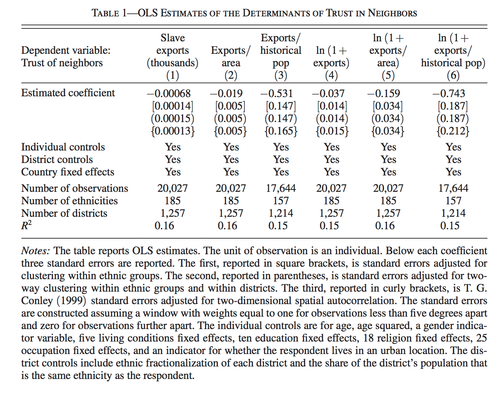

library(haven)
nunn_full <- read_dta("data/input/Nunn_Wantchekon_AER_2011.dta")9 Programming: Manipulating Vectors and Matrices1
Motivation
Nunn and Wantchekon (2011) – “The Slave Trade and the Origins of Mistrust in Africa”2 – argues that across African countries, the distrust of co-ethnics fueled by the slave trade has had long-lasting effects on modern day trust in these territories. They argued that the slave trade created distrust in these societies in part because as some African groups were employed by European traders to capture their neighbors and bring them to the slave ships.
Nunn and Wantchekon use a variety of statistical tools to make their case (adding controls, ordered logit, instrumental variables, falsification tests, causal mechanisms), many of which will be covered in future courses. In this module we will only touch on their first set of analysis that use Ordinary Least Squares (OLS). OLS is likely the most common application of linear algebra in the social sciences. We will cover some linear algebra, matrix manipulation, and vector manipulation from this data.
Where are we? Where are we headed?
Up till now, you should have covered:
- R basic programming
- Data Import
- Statistical Summaries.
Today we’ll cover
- Matrices & Dataframes in R
- Manipulating variables
- And other
Rtips
9.1 Read Data
Nunn and Wantchekon’s main dataset has more than 20,000 observations. Each observation is a respondent from the Afrobarometer survey.
head(nunn_full)# A tibble: 6 × 59
respno ethnicity murdock_name isocode region district townvill location_id
<chr> <chr> <chr> <chr> <chr> <chr> <chr> <dbl>
1 BEN0001 fon FON BEN atlnatiq… KPOMASSE TOKPA-D… 30
2 BEN0002 fon FON BEN atlnatiq… KPOMASSE TOKPA-D… 30
3 BEN0003 fon FON BEN atlnatiq… OUIDAH 3ARROND 31
4 BEN0004 fon FON BEN atlnatiq… OUIDAH 3ARROND 31
5 BEN0005 fon FON BEN atlnatiq… OUIDAH PAHOU 32
6 BEN0006 fon FON BEN atlnatiq… OUIDAH PAHOU 32
# ℹ 51 more variables: trust_relatives <dbl>, trust_neighbors <dbl>,
# intra_group_trust <dbl>, inter_group_trust <dbl>,
# trust_local_council <dbl>, ln_export_area <dbl>, export_area <dbl>,
# export_pop <dbl>, ln_export_pop <dbl>, age <dbl>, age2 <dbl>, male <dbl>,
# urban_dum <dbl>, occupation <dbl>, religion <dbl>, living_conditions <dbl>,
# education <dbl>, near_dist <dbl>, distsea <dbl>, loc_murdock_name <chr>,
# loc_ln_export_area <dbl>, local_council_performance <dbl>, …colnames(nunn_full) [1] "respno" "ethnicity"
[3] "murdock_name" "isocode"
[5] "region" "district"
[7] "townvill" "location_id"
[9] "trust_relatives" "trust_neighbors"
[11] "intra_group_trust" "inter_group_trust"
[13] "trust_local_council" "ln_export_area"
[15] "export_area" "export_pop"
[17] "ln_export_pop" "age"
[19] "age2" "male"
[21] "urban_dum" "occupation"
[23] "religion" "living_conditions"
[25] "education" "near_dist"
[27] "distsea" "loc_murdock_name"
[29] "loc_ln_export_area" "local_council_performance"
[31] "council_listen" "corrupt_local_council"
[33] "school_present" "electricity_present"
[35] "piped_water_present" "sewage_present"
[37] "health_clinic_present" "district_ethnic_frac"
[39] "frac_ethnicity_in_district" "townvill_nonethnic_mean_exports"
[41] "district_nonethnic_mean_exports" "region_nonethnic_mean_exports"
[43] "country_nonethnic_mean_exports" "murdock_centr_dist_coast"
[45] "centroid_lat" "centroid_long"
[47] "explorer_contact" "railway_contact"
[49] "dist_Saharan_node" "dist_Saharan_line"
[51] "malaria_ecology" "v30"
[53] "v33" "fishing"
[55] "exports" "ln_exports"
[57] "total_missions_area" "ln_init_pop_density"
[59] "cities_1400_dum" First, let’s consider a small subset of this dataset.
nunn <- read_dta("data/input/Nunn_Wantchekon_sample.dta")nunn# A tibble: 10 × 5
trust_neighbors exports ln_exports export_area ln_export_area
<dbl> <dbl> <dbl> <dbl> <dbl>
1 3 0.388 0.328 0.00407 0.00406
2 3 0.631 0.489 0.0971 0.0926
3 3 0.994 0.690 0.0125 0.0124
4 0 183. 5.21 1.82 1.04
5 3 0 0 0 0
6 2 0 0 0 0
7 2 666. 6.50 14.0 2.71
8 0 0.348 0.298 0.00608 0.00606
9 3 0.435 0.361 0.0383 0.0376
10 3 0 0 0 0 9.2 data.frame vs. matricies
This is a data.frame object.
class(nunn)[1] "tbl_df" "tbl" "data.frame"But it can be also consider a matrix in the linear algebra sense. What are the dimensions of this matrix?
nrow(nunn)[1] 10data.frames and matrices have much overlap in R, but to explicitly treat an object as a matrix, you’d need to coerce its class. Let’s call this matrix X.
X <- as.matrix(nunn)What is the difference between a data.frame and a matrix? A data.frame can have columns that are of different types, whereas — in a matrix — all columns must be of the same type (usually either “numeric” or “character”).
You can think of data frames maybe as matrices-plus, because a column can take on characters as well as numbers. As we just saw, this is often useful for real data analyses.
Another way to think about data frames is that it is a type of list. Try the str() code below and notice how it is organized in slots. Each slot is a vector. They can be vectors of numbers or characters.
# enter this on your console
str(cen10)9.3 Handling matricies in R
You can easily transpose a matrix
X trust_neighbors exports ln_exports export_area ln_export_area
[1,] 3 0.3883497 0.3281158 0.004067405 0.004059155
[2,] 3 0.6311236 0.4892691 0.097059444 0.092633367
[3,] 3 0.9941893 0.6902376 0.012524694 0.012446908
[4,] 0 182.5891266 5.2127004 1.824284434 1.038255095
[5,] 3 0.0000000 0.0000000 0.000000000 0.000000000
[6,] 2 0.0000000 0.0000000 0.000000000 0.000000000
[7,] 2 665.9652100 6.5027380 13.975566864 2.706419945
[8,] 0 0.3476418 0.2983562 0.006082553 0.006064130
[9,] 3 0.4349871 0.3611559 0.038332380 0.037615947
[10,] 3 0.0000000 0.0000000 0.000000000 0.000000000t(X) [,1] [,2] [,3] [,4] [,5] [,6]
trust_neighbors 3.000000000 3.00000000 3.00000000 0.000000 3 2
exports 0.388349682 0.63112360 0.99418926 182.589127 0 0
ln_exports 0.328115761 0.48926911 0.69023758 5.212700 0 0
export_area 0.004067405 0.09705944 0.01252469 1.824284 0 0
ln_export_area 0.004059155 0.09263337 0.01244691 1.038255 0 0
[,7] [,8] [,9] [,10]
trust_neighbors 2.000000 0.000000000 3.00000000 3
exports 665.965210 0.347641766 0.43498713 0
ln_exports 6.502738 0.298356235 0.36115587 0
export_area 13.975567 0.006082553 0.03833238 0
ln_export_area 2.706420 0.006064130 0.03761595 0What are the values of all rows in the first column?
X[, 1] [1] 3 3 3 0 3 2 2 0 3 3What are all the values of “exports”? (i.e. return the whole “exports” column)
X[, "exports"] [1] 0.3883497 0.6311236 0.9941893 182.5891266 0.0000000 0.0000000
[7] 665.9652100 0.3476418 0.4349871 0.0000000What is the first observation (i.e. first row)?
X[1, ]trust_neighbors exports ln_exports export_area ln_export_area
3.000000000 0.388349682 0.328115761 0.004067405 0.004059155 What is the value of the first variable of the first observation?
X[1, 1]trust_neighbors
3 Pause and consider the following problem on your own. What is the following code doing?
X[X[, "trust_neighbors"] == 0, "export_area"][1] 1.824284434 0.006082553Why does it give the same output as the following?
X[which(X[, "trust_neighbors"] == 0), "export_area"][1] 1.824284434 0.006082553Some more manipulation
X + X trust_neighbors exports ln_exports export_area ln_export_area
[1,] 6 0.7766994 0.6562315 0.008134809 0.00811831
[2,] 6 1.2622472 0.9785382 0.194118887 0.18526673
[3,] 6 1.9883785 1.3804752 0.025049388 0.02489382
[4,] 0 365.1782532 10.4254007 3.648568869 2.07651019
[5,] 6 0.0000000 0.0000000 0.000000000 0.00000000
[6,] 4 0.0000000 0.0000000 0.000000000 0.00000000
[7,] 4 1331.9304199 13.0054760 27.951133728 5.41283989
[8,] 0 0.6952835 0.5967125 0.012165107 0.01212826
[9,] 6 0.8699743 0.7223117 0.076664761 0.07523189
[10,] 6 0.0000000 0.0000000 0.000000000 0.00000000X - X trust_neighbors exports ln_exports export_area ln_export_area
[1,] 0 0 0 0 0
[2,] 0 0 0 0 0
[3,] 0 0 0 0 0
[4,] 0 0 0 0 0
[5,] 0 0 0 0 0
[6,] 0 0 0 0 0
[7,] 0 0 0 0 0
[8,] 0 0 0 0 0
[9,] 0 0 0 0 0
[10,] 0 0 0 0 0t(X) %*% X trust_neighbors exports ln_exports export_area
trust_neighbors 62.000000 1339.276 18.61181 28.40709
exports 1339.276369 476850.298 5283.76294 9640.42990
ln_exports 18.611811 5283.763 70.50077 100.46202
export_area 28.407085 9640.430 100.46202 198.65558
ln_export_area 5.853106 1992.047 23.08189 39.72847
ln_export_area
trust_neighbors 5.853106
exports 1992.046502
ln_exports 23.081893
export_area 39.728468
ln_export_area 8.412887cbind(X, 1:10) trust_neighbors exports ln_exports export_area ln_export_area
[1,] 3 0.3883497 0.3281158 0.004067405 0.004059155 1
[2,] 3 0.6311236 0.4892691 0.097059444 0.092633367 2
[3,] 3 0.9941893 0.6902376 0.012524694 0.012446908 3
[4,] 0 182.5891266 5.2127004 1.824284434 1.038255095 4
[5,] 3 0.0000000 0.0000000 0.000000000 0.000000000 5
[6,] 2 0.0000000 0.0000000 0.000000000 0.000000000 6
[7,] 2 665.9652100 6.5027380 13.975566864 2.706419945 7
[8,] 0 0.3476418 0.2983562 0.006082553 0.006064130 8
[9,] 3 0.4349871 0.3611559 0.038332380 0.037615947 9
[10,] 3 0.0000000 0.0000000 0.000000000 0.000000000 10cbind(X, 1) trust_neighbors exports ln_exports export_area ln_export_area
[1,] 3 0.3883497 0.3281158 0.004067405 0.004059155 1
[2,] 3 0.6311236 0.4892691 0.097059444 0.092633367 1
[3,] 3 0.9941893 0.6902376 0.012524694 0.012446908 1
[4,] 0 182.5891266 5.2127004 1.824284434 1.038255095 1
[5,] 3 0.0000000 0.0000000 0.000000000 0.000000000 1
[6,] 2 0.0000000 0.0000000 0.000000000 0.000000000 1
[7,] 2 665.9652100 6.5027380 13.975566864 2.706419945 1
[8,] 0 0.3476418 0.2983562 0.006082553 0.006064130 1
[9,] 3 0.4349871 0.3611559 0.038332380 0.037615947 1
[10,] 3 0.0000000 0.0000000 0.000000000 0.000000000 1colnames(X)[1] "trust_neighbors" "exports" "ln_exports" "export_area"
[5] "ln_export_area" 9.4 Variable Transformations
exports is the total number of slaves that were taken from the individual’s ethnic group between Africa’s four slave trades between 1400-1900.
What is ln_exports? The article describes this as the natural log of one plus the exports. This is a transformation of one column by a particular function
log(1 + X[, "exports"]) [1] 0.3281158 0.4892691 0.6902376 5.2127003 0.0000000 0.0000000 6.5027379
[8] 0.2983562 0.3611559 0.0000000Question for you: why add the 1?
Verify that this is the same as X[, "ln_exports"]
9.5 Linear Combinations
In Table 1 we see “OLS Estimates”. These are estimates of OLS coefficients and standard errors. You do not need to know what these are for now, but it doesn’t hurt to getting used to seeing them.

A very crude way to describe regression is through linear combinations. The simplest linear combination is a one-to-one transformation.
Take the first number in Table 1, which is -0.00068. Now, multiply this by exports
-0.00068 * X[, "exports"] [1] -0.0002640778 -0.0004291640 -0.0006760487 -0.1241606061 0.0000000000
[6] 0.0000000000 -0.4528563428 -0.0002363964 -0.0002957912 0.0000000000Now, just one more step. Make a new matrix with just exports and the value 1
X2 <- cbind(1, X[, "exports"])name this new column “intercept”
colnames(X2)NULLcolnames(X2) <- c("intercept", "exports")What are the dimensions of the matrix X2?
dim(X2)[1] 10 2Now consider a new matrix, called B.
B <- matrix(c(1.62, -0.00068))What are the dimensions of B?
dim(B)[1] 2 1What is the product of X2 and B? From the dimensions, can you tell if it will be conformable?
X2 %*% B [,1]
[1,] 1.619736
[2,] 1.619571
[3,] 1.619324
[4,] 1.495839
[5,] 1.620000
[6,] 1.620000
[7,] 1.167144
[8,] 1.619764
[9,] 1.619704
[10,] 1.620000What is this multiplication doing in terms of equations?
9.6 Matrix Basics
Let’s take a look at Matrices in the context of R
cen10 <- read_csv("data/input/usc2010_001percent.csv")
head(cen10)# A tibble: 6 × 4
state sex age race
<chr> <chr> <dbl> <chr>
1 New York Female 8 White
2 Ohio Male 24 White
3 Nevada Male 37 White
4 Michigan Female 12 White
5 Maryland Female 18 Black/Negro
6 New Hampshire Male 50 White What is the dimension of this dataframe? What does the number of rows represent? What does the number of columns represent?
dim(cen10)[1] 30871 4nrow(cen10)[1] 30871ncol(cen10)[1] 4What variables does this dataset hold? What kind of information does it have?
colnames(cen10)[1] "state" "sex" "age" "race" We can access column vectors, or vectors that contain values of variables by using the $ sign
head(cen10$state)[1] "New York" "Ohio" "Nevada" "Michigan"
[5] "Maryland" "New Hampshire"head(cen10$race)[1] "White" "White" "White" "White" "Black/Negro"
[6] "White" We can look at a unique set of variable values by calling the unique function
unique(cen10$state) [1] "New York" "Ohio" "Nevada"
[4] "Michigan" "Maryland" "New Hampshire"
[7] "Iowa" "Missouri" "New Jersey"
[10] "California" "Texas" "Pennsylvania"
[13] "Washington" "West Virginia" "Idaho"
[16] "North Carolina" "Massachusetts" "Connecticut"
[19] "Arkansas" "Indiana" "Wisconsin"
[22] "Maine" "Tennessee" "Minnesota"
[25] "Florida" "Oklahoma" "Montana"
[28] "Georgia" "Arizona" "Colorado"
[31] "Virginia" "Illinois" "Oregon"
[34] "Kentucky" "South Carolina" "Kansas"
[37] "Louisiana" "Alabama" "District of Columbia"
[40] "Mississippi" "Utah" "Delaware"
[43] "Nebraska" "Alaska" "New Mexico"
[46] "South Dakota" "Hawaii" "Vermont"
[49] "Rhode Island" "Wyoming" "North Dakota" How many different states are represented (this dataset includes DC as a state)?
length(unique(cen10$state))[1] 51Matrices are rectangular structures of numbers (they have to be numbers, and they can’t be characters).
A cross-tab can be considered a matrix:
table(cen10$race, cen10$sex)
Female Male
American Indian or Alaska Native 142 153
Black/Negro 2070 1943
Chinese 192 162
Japanese 51 26
Other Asian or Pacific Islander 587 542
Other race, nec 877 962
Three or more major races 37 51
Two major races 443 426
White 11252 10955cross_tab <- table(cen10$race, cen10$sex)
dim(cross_tab)[1] 9 2cross_tab[6, 2][1] 962But a subset of your data – individual values– can be considered a matrix too.
# First 20 rows of the entire data
# Below two lines of code do the same thing
cen10[1:20, ]# A tibble: 20 × 4
state sex age race
<chr> <chr> <dbl> <chr>
1 New York Female 8 White
2 Ohio Male 24 White
3 Nevada Male 37 White
4 Michigan Female 12 White
5 Maryland Female 18 Black/Negro
6 New Hampshire Male 50 White
7 Iowa Female 51 White
8 Missouri Female 41 White
9 New Jersey Male 62 White
10 California Male 25 White
11 Texas Female 23 White
12 Pennsylvania Female 66 White
13 California Female 57 White
14 Texas Female 73 Other race, nec
15 California Male 43 White
16 Washington Male 29 White
17 Texas Male 8 White
18 Missouri Male 78 White
19 West Virginia Male 10 White
20 Idaho Female 9 White cen10 %>% slice(1:20)# A tibble: 20 × 4
state sex age race
<chr> <chr> <dbl> <chr>
1 New York Female 8 White
2 Ohio Male 24 White
3 Nevada Male 37 White
4 Michigan Female 12 White
5 Maryland Female 18 Black/Negro
6 New Hampshire Male 50 White
7 Iowa Female 51 White
8 Missouri Female 41 White
9 New Jersey Male 62 White
10 California Male 25 White
11 Texas Female 23 White
12 Pennsylvania Female 66 White
13 California Female 57 White
14 Texas Female 73 Other race, nec
15 California Male 43 White
16 Washington Male 29 White
17 Texas Male 8 White
18 Missouri Male 78 White
19 West Virginia Male 10 White
20 Idaho Female 9 White # Of the first 20 rows of the entire data, look at values of just race and age
# Below two lines of code do the same thing
cen10[1:20, c("race", "age")]# A tibble: 20 × 2
race age
<chr> <dbl>
1 White 8
2 White 24
3 White 37
4 White 12
5 Black/Negro 18
6 White 50
7 White 51
8 White 41
9 White 62
10 White 25
11 White 23
12 White 66
13 White 57
14 Other race, nec 73
15 White 43
16 White 29
17 White 8
18 White 78
19 White 10
20 White 9cen10 %>% slice(1:20) %>% select(race, age)# A tibble: 20 × 2
race age
<chr> <dbl>
1 White 8
2 White 24
3 White 37
4 White 12
5 Black/Negro 18
6 White 50
7 White 51
8 White 41
9 White 62
10 White 25
11 White 23
12 White 66
13 White 57
14 Other race, nec 73
15 White 43
16 White 29
17 White 8
18 White 78
19 White 10
20 White 9A vector is a special type of matrix with only one column or only one row
# One column
cen10[1:10, c("age")]# A tibble: 10 × 1
age
<dbl>
1 8
2 24
3 37
4 12
5 18
6 50
7 51
8 41
9 62
10 25cen10 %>% slice(1:10) %>% select(c("age"))# A tibble: 10 × 1
age
<dbl>
1 8
2 24
3 37
4 12
5 18
6 50
7 51
8 41
9 62
10 25# One row
cen10[2, ]# A tibble: 1 × 4
state sex age race
<chr> <chr> <dbl> <chr>
1 Ohio Male 24 Whitecen10 %>% slice(2)# A tibble: 1 × 4
state sex age race
<chr> <chr> <dbl> <chr>
1 Ohio Male 24 WhiteWhat if we want a special subset of the data? For example, what if I only want the records of individuals in California? What if I just want the age and race of individuals in California?
# subset for CA rows
ca_subset <- cen10[cen10$state == "California", ]
ca_subset_tidy <- cen10 %>% filter(state == "California")
all_equal(ca_subset, ca_subset_tidy)Warning: `all_equal()` was deprecated in dplyr 1.1.0.
ℹ Please use `all.equal()` instead.
ℹ And manually order the rows/cols as needed[1] TRUE# subset for CA rows and select age and race
ca_subset_age_race <- cen10[cen10$state == "California", c("age", "race")]
ca_subset_age_race_tidy <- cen10 %>% filter(state == "California") %>% select(age, race)
all_equal(ca_subset_age_race, ca_subset_age_race_tidy)[1] TRUESome common operators that can be used to filter or to use as a condition. Remember, you can use the unique function to look at the set of all values a variable holds in the dataset.
# all individuals older than 30 and younger than 70
s1 <- cen10[cen10$age > 30 & cen10$age < 70, ]
s2 <- cen10 %>% filter(age > 30 & age < 70)
all_equal(s1, s2)[1] TRUE# all individuals in either New York or California
s3 <- cen10[cen10$state == "New York" | cen10$state == "California", ]
s4 <- cen10 %>% filter(state == "New York" | state == "California")
all_equal(s3, s4)[1] TRUE# all individuals in any of the following states: California, Ohio, Nevada, Michigan
s5 <- cen10[cen10$state %in% c("California", "Ohio", "Nevada", "Michigan"), ]
s6 <- cen10 %>% filter(state %in% c("California", "Ohio", "Nevada", "Michigan"))
all_equal(s5, s6)[1] TRUE# all individuals NOT in any of the following states: California, Ohio, Nevada, Michigan
s7 <- cen10[!(cen10$state %in% c("California", "Ohio", "Nevada", "Michigan")), ]
s8 <- cen10 %>% filter(!state %in% c("California", "Ohio", "Nevada", "Michigan"))
all_equal(s7, s8)[1] TRUECheckpoint
1
Get the subset of cen10 for non-white individuals (Hint: look at the set of values for the race variable by using the unique function)
# Enter here2
Get the subset of cen10 for females over the age of 40
# Enter here3
Get all the serial numbers for black, male individuals who don’t live in Ohio or Nevada.
# Enter hereExercises
1
Let \[\mathbf{A} = \left[\begin{array} {rrr} 0.6 & 0.2\\ 0.4 & 0.8\\ \end{array}\right]\]
Use R to write code that will create the matrix \(A\), and then consecutively multiply \(A\) to itself 4 times. What is the value of \(A^{4}\)?
## Enter yourselfNote that R notation of matrices is different from the math notation. Simply trying X^n where X is a matrix will only take the power of each element to n. Instead, this problem asks you to perform matrix multiplication.
2
Let’s apply what we learned about subsetting or filtering/selecting. Use the nunn_full dataset you have already loaded
- First, show all observations (rows) that have a
"male"variable higher than 0.5
## Enter yourself- Next, create a matrix / dataframe with only two columns:
"trust_neighbors"and"age"
## Enter yourself- Lastly, show all values of
"trust_neighbors"and"age"for observations (rows) that have the “male” variable value that is higher than 0.5
## Enter yourself3
Find a way to generate a vector of “column averages” of the matrix X from the Nunn and Wantchekon data in one line of code. Each entry in the vector should contain the sample average of the values in the column. So a 100 by 4 matrix should generate a length-4 matrix.
4
Similarly, generate a vector of “column medians”.
5
Consider the regression that was run to generate Table 1:
form <- "trust_neighbors ~ exports + age + age2 + male + urban_dum + factor(education) + factor(occupation) + factor(religion) + factor(living_conditions) + district_ethnic_frac + frac_ethnicity_in_district + isocode"
lm_1_1 <- lm(as.formula(form), nunn_full)
# The below coef function returns a vector of OLS coefficiants
coef(lm_1_1) (Intercept) exports
1.619913e+00 -6.791360e-04
age age2
8.395936e-03 -5.473436e-05
male urban_dum
4.550246e-02 -1.404551e-01
factor(education)1 factor(education)2
1.709816e-02 -5.224591e-02
factor(education)3 factor(education)4
-1.373770e-01 -1.889619e-01
factor(education)5 factor(education)6
-1.893494e-01 -2.400767e-01
factor(education)7 factor(education)8
-2.850748e-01 -1.232085e-01
factor(education)9 factor(occupation)1
-2.406437e-01 6.185655e-02
factor(occupation)2 factor(occupation)3
7.392168e-02 3.356158e-02
factor(occupation)4 factor(occupation)5
7.942048e-03 6.661126e-02
factor(occupation)6 factor(occupation)7
-7.563297e-02 1.699699e-02
factor(occupation)8 factor(occupation)9
-9.428177e-02 -9.981440e-02
factor(occupation)10 factor(occupation)11
-3.307068e-02 -2.300045e-02
factor(occupation)12 factor(occupation)13
-1.564540e-01 -1.441370e-02
factor(occupation)14 factor(occupation)15
-5.566414e-02 -2.343762e-01
factor(occupation)16 factor(occupation)18
-1.306947e-02 -1.729589e-01
factor(occupation)19 factor(occupation)20
-1.770261e-01 -2.457800e-02
factor(occupation)21 factor(occupation)22
-4.936813e-02 -1.068511e-01
factor(occupation)23 factor(occupation)24
-9.712205e-02 1.292371e-02
factor(occupation)25 factor(occupation)995
2.623186e-02 -1.195063e-03
factor(religion)2 factor(religion)3
5.395953e-02 7.887878e-02
factor(religion)4 factor(religion)5
4.749150e-02 4.318455e-02
factor(religion)6 factor(religion)7
-1.787694e-02 -3.616542e-02
factor(religion)10 factor(religion)11
6.015041e-02 2.237845e-01
factor(religion)12 factor(religion)13
2.627086e-01 -6.812813e-02
factor(religion)14 factor(religion)15
4.673681e-02 3.844555e-01
factor(religion)360 factor(religion)361
3.656843e-01 3.416413e-01
factor(religion)362 factor(religion)363
8.230393e-01 3.856565e-01
factor(religion)995 factor(living_conditions)2
4.161301e-02 4.395862e-02
factor(living_conditions)3 factor(living_conditions)4
8.627372e-02 1.197428e-01
factor(living_conditions)5 district_ethnic_frac
1.203606e-01 -1.553648e-02
frac_ethnicity_in_district isocodeBWA
1.011222e-01 -4.258953e-01
isocodeGHA isocodeKEN
1.135307e-02 -1.819556e-01
isocodeLSO isocodeMDG
-5.511200e-01 -3.315727e-01
isocodeMLI isocodeMOZ
7.528101e-02 8.223730e-02
isocodeMWI isocodeNAM
3.062497e-01 -1.397541e-01
isocodeNGA isocodeSEN
-2.381525e-01 3.867371e-01
isocodeTZA isocodeUGA
2.079366e-01 -6.443732e-02
isocodeZAF isocodeZMB
-2.179153e-01 -2.172868e-01 First, get a small subset of the nunn_full dataset. This time, sample 20 rows and select for variables exports, age, age2, male, and urban_dum. To this small subset, add (bind_cols() in tidyverse or cbind() in base R) a column of 1’s; this represents the intercept. If you need some guidance, look at how we sampled 10 rows selected for a different set of variables above in the lecture portion.
# Enter hereNext let’s try calculating predicted values of levels of trust in neighbors by multiplying coefficients for the intercept, exports, age, age2, male, and urban_dum to the actual observed values for those variables in the small subset you’ve just created.
# Hint: You can get just selected elements from the vector returned by coef(lm_1_1)
# For example, the below code gives you the first 3 elements of the original vector
coef(lm_1_1)[1:3] (Intercept) exports age
1.619913146 -0.000679136 0.008395936 # Also, the below code gives you the coefficient elements for intercept and male
coef(lm_1_1)[c("(Intercept)", "male")](Intercept) male
1.61991315 0.04550246 Special thanks to Shiro Kuriwaki and Yon Soo Park for developing the original module↩︎
Nunn, Nathan, and Leonard Wantchekon. 2011. “The Slave Trade and the Origins of Mistrust in Africa.” American Economic Review 101(7): 3221–52.↩︎
Special thanks to Shiro Kuriwaki for developing the original version of this tutorial↩︎
Special thanks to Shiro Kuriwaki for developing the original version of this tutorial↩︎
Special thanks to Shiro Kuriwaki and Yon Soo Park for developing the original module↩︎
Module originally written by Shiro Kuriwaki, Connor Jerzak, and Yon Soo Park↩︎
Module originally written by Connor Jerzak and Shiro Kuriwaki↩︎
Special thanks to Shiro Kuriwaki and Yon Soo Park for developing the original module↩︎
Special thanks to Shiro Kuriwaki and Yon Soo Park for developing the original module↩︎
Special thanks to Shiro Kuriwaki and Yon Soo Park for developing the original module↩︎